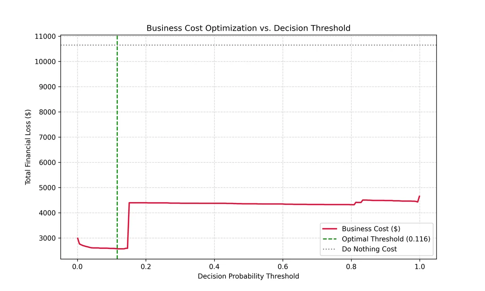
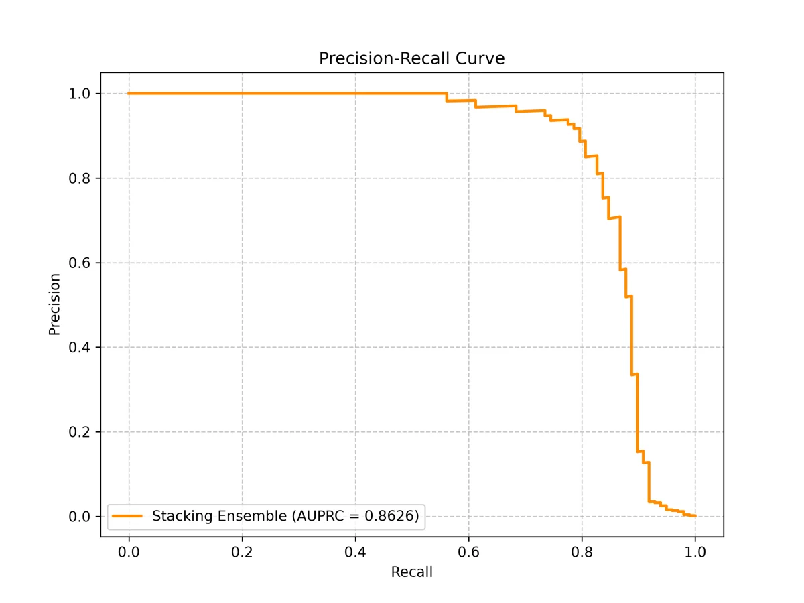

Credit card fraud detection
Most fraud models are judged on accuracy. A bank cares about money. This project picks the alert threshold that costs the least once you count both the analysts reviewing alerts and the fraud that slips through.
- Fraud cost vs. no model
- −75.8%
- Fraud caught (recall)
- 87.8%
- AUPRC
- 0.858
- Fraud rate in data
- 0.17%
The problem
The dataset holds about 285,000 European card transactions, and only 0.17% are fraud. A model that calls everything legitimate is 99.8% accurate and completely useless, so accuracy can't be the yardstick.
The real trade-off is between two costs:
- Reviewing an alert takes an analyst's time. I priced this at $5 per flagged transaction.
- Missing a fraud loses the full transaction amount.
Flag too much and review costs explode. Flag too little and fraud losses pile up. The goal is the cheapest point between them.
Approach
- Features. Encoded time of day as a cycle (so 11:59 pm sits next to midnight) and scaled amounts with a robust scaler that isn't thrown off by a few huge transactions.
- An anomaly signal. Trained a small PyTorch autoencoder to reconstruct normal transactions. How badly it reconstructs a new one becomes an extra feature: fraud tends to look "unusual" in ways no single column shows.
- Handling the imbalance. Oversampled fraud with SMOTE during training only, never on the data used for evaluation.
- The model. A stacking ensemble: XGBoost and LightGBM make predictions, and a logistic regression learns how much to trust each one.
- The threshold. Instead of the default 0.5 cut-off, I swept 200 thresholds and priced each one with the cost function above. The cheapest landed at 0.116, which flags more transactions than the default and catches more fraud.
- Explaining decisions. SHAP attributions show which features pushed each transaction toward "fraud", so an analyst can see why it was flagged before acting on it.

Results
On a held-out set of 56,962 transactions containing 98 frauds:
| Strategy | Total cost |
|---|---|
| Do nothing (let all fraud through) | $10,645 |
| Manually review every transaction | $284,810 |
| Model at the cost-optimal threshold | $2,574 |
The model caught 86 of the 98 frauds and raised 44 false alarms out of nearly 57,000 legitimate transactions. That's $8,071 saved on this sample, a 75.8% cut in fraud cost.

What I'd do next
- Pick the threshold on a separate validation set. Here it was chosen on the same data used to report results, which makes the savings figure a little optimistic.
- Stress-test the cost assumptions. Re-run the threshold search across a range of review costs, since $5 is an estimate and the best threshold moves with it.
- Monitor for drift. Fraud patterns change. Tracking the autoencoder's reconstruction error over time would give an early warning that the model is going stale.